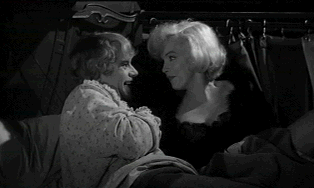

| Some Like it Hot/A, C |
| MGM/1959/119/WS 1.66 |
When Some Like it Hot is released on a new HDDVD format sometime in the next five years, it will be yet another opportunity to laugh myself silly in one of director Billy Wilder's most sublime successes .Before watching it on DVD recently, I thought maybe it’s comic magic had grown in my mind in the years since I last saw it. It’s as funny or funnier than ever, happily. The zany plot is consistently true to itself. The characters are given the snappiest, slightly licentious, dialogue this side of Preston Sturges.
 |
| A little sugar in the bunk adds spice. ©MGM |
You could say Some Like it Hot is a one joke movie, but
the execution is splendid. Down and out musicians Joe and Jerry witness of
Chicago gangland mass murder. They barely escape themselves and hightail it
out of Chicago at the first opportunity. Happily, they land a gig in an
all-girl band headed to sunny Florida. The train trip to Palm Beach is a
blessed hoot and the film stays on track full steam ahead right to inspired
last line. never flags. Joe and Jerry are entranced by girl singer Sugar
Cane, and lothario Joe sets out to capture her heart. Jerry has to fend for
himself and fend off Osgood E. Fielding III. The girdle work provides plenty
of belly laughs. Wilder and his co writer Diamond are in top form and the
great San Diego Coronado Hotel setting adds to the delight.
Marilyn Monroe wriggles and shakes her way as Sugar
Cane to iconic perfection. Mining her obvious assets lusciously, her
somewhat overripe body oozes sex and innocence in perfect proportion.
Tony Curtis and Jack Lemmon are hilarious in drag, and Curtis is even
funnier doing his best take on Cary Grant. Joe E. Brown, a comedian from
another era, plays it like his character is from another era. His acting
style is quite different from everyone else in Some Like it Hot, but
it works beautifully.
The transfer falls short in this MGM DVD. It’s
letterbox 1.66, not anamorphically enhanced, but there’s plenty enough
resolution to deliver the goods in sharp condition. That is not always the
case however. There are too many slightly fuzzy scenes. Happily, the
close-ups of Monroe are all sharp and catch every sparkle of her eyes.
Contrast ratio is slightly less punchy than I like, but it’s livable. The
sound is very thin, just short of distracting. There is some dirt and
scratches that show up and a few jumpy edge artifacts are in evidence as
well.

Selections from the
Feature Archive
include articles on Akira Kurosawa,
Blonde Bimbos,
Frank Darabont,
Steven Culp,
John Herzfeld or
Vietnam: The Hollywood Pariah, and many
more....
Director Walks the Wire
Balanced by an armor of movie lore and filmmaking daring, director John
Herzfeld is comfortable walking the high wire. Check out this interview by
Stu Kobak.
Roman Holiday
Join the editor and his family on a trip through Roman movie sites in this
unusual feature.

The Movie Poster Archive includes extensive poster images from the films of stars like Susan Hayward, Kirk Douglas, Katharine Hepburn and many more. Our featured star is Cary Grant.


The American Widescreen Museum, is the ultimate resource for
widescreen movie information, Martin Hart's reliable site is a great tool
for movie buffs.

Comprehensive DVD review
database. Easy to use interface with specific region searches.

DVD Easter Eggs
How do you take them? Fried or
scrambled. Get the secrets here.